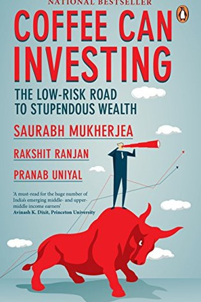

Library › Money & Finance
Coffee Can Investing — Summary & Key Lessons

The low-risk route to stupendous wealth in the Indian stock market.
📖 OPEN THE FULL INTERACTIVE BREAKDOWN →🌐 Read it in Hindi, Hinglish, Gujarati, Tamil & 22 more languages — free, with audio.
💡 The Big Idea
Most Indian investors overtrade and underperform. Mukherjea's alternative: the coffee can portfolio — put quality companies in a can, seal it, don't peek for ten years. His research shows a small portfolio of firms with Competitive advantages, Clean accounting and Efficient capital allocation (CCE) massively outperforms the index and almost every active fund. The book is a disciplined, evidence-based case for patience with quality.
🧠 The 7 Key Lessons
Lesson 1: The Coffee Can — Buy and Hold Quality
The Concept
Mukherjea's metaphor: the American cowboy sealed his best coins in a coffee can and forgot them for years. The lesson: the portfolio that outperforms is usually the one you barely touch. Frequent buying and selling taxes returns and invites emotional mistakes. If you buy quality at reasonable prices, the best action is often no action. Boredom is a feature of good investing.
📖 Example: Mukherjea's research: a coffee can portfolio of 15–20 quality stocks bought in 2008 and held to 2018 returned dramatically more than the index and most active funds. The practical edge: 'coffee can' is not a one-time decision — it's a habit that compounds… Read the full example →
⚡ Do this: If you invest, list your current holdings and your holding period. Which ones did you buy for reasons that still hold today? Ignore the rest.
Lesson 2: The CCE Framework — Pick Only the Best
The Framework
Mukherjea screens for three traits: Competitive advantage (durable moats), Clean accounting (honest, consistent numbers) and Efficient capital allocation (management that reinvests wisely). A company with all three is rare — in India, he found roughly a dozen. The lesson: quality is rare and must be searched for deliberately. Most stocks are average; the coffee can holds only the exceptions.
📖 Example: His famous 'CCE list' of Indian companies consistently outperformed, while companies with flashy growth but weak accounting repeatedly destroyed wealth. Here's the part that usually gets missed: 'cce framework' works quietly. You won't see it working in a… Read the full example →
⚡ Do this: Apply a simplified CCE test to one company or one personal project: does it have a durable edge, honest numbers and wise reinvestment?
Lesson 3: Avoid IPOs, Fads and 'Hot' Sectors
What to Avoid
Mukherjea is blunt: most IPOs, theme stocks and 'next big thing' sectors are value destroyers for retail investors. By the time something is hot, the smart money has already priced it. The lesson: attention is not a signal — it is often a warning. The sectors with the most headlines have the worst risk-reward for late entrants. Quality, not novelty, is the edge.
📖 Example: India's IPO history shows most listings giving poor long-term returns versus the CCE portfolio — the excitement was the product, not the profit. The real test of this lesson is a bad day: the principle that survives a crisis, a tight deadline and a doubting… Read the full example →
⚡ Do this: Before buying anything that's trending, ask: am I late to this story? If everyone is talking about it, what edge do I actually have?
Lesson 4: Compounding Needs a Long Rope
The Power of Time
Mukherjea's data shows the Indian market's biggest wealth creation happens in long holding periods — 10 years or more. The lesson: compounding is a slow-motion miracle that most people interrupt just before it pays. The emotional work of investing is resisting the urge to check, trade and 'optimize'. The portfolio that is boring for years becomes life-changing in decades.
📖 Example: An investor who held a coffee can through 2008, 2011 and 2015 crises ended far wealthier than one who sold in every panic and re-entered late. In practice, 'compounding needs a long rope' shows up in tiny daily choices long before it shows up in outcomes —… Read the full example →
⚡ Do this: Calculate what your current savings would become in 15 years at 12% annual return. Let that number make you patient.
Lesson 5: Ignore the Noise — Headlines Are Not Data
Information Diet
Mukherjea advises an aggressive information diet: daily market news, expert predictions and TV debates are noise that triggers trades. The lesson: the market's daily drama is designed to make you act; your edge comes from refusing. Weekly or monthly review beats daily obsession. The investor's attention is a resource — spend it on company research, not on market commentary.
📖 Example: His own team reviewed portfolios quarterly, not daily — and consistently outperformed fund managers who lived on newsfeeds. Most people nod at this principle and change nothing. The gap between agreeing and acting is where the whole game is won or lost. Read the full example →
⚡ Do this: Try a one-week market news fast: no price checking, no business TV. Log how many impulses to trade you felt and how many you ignored.
Lesson 6: Concentrate on Quality, Not Quantity
Portfolio Construction
The coffee can is not diversified into 100 stocks — it holds 15–20 high-conviction names. Mukherjea's point: excessive diversification is an admission of ignorance that guarantees average returns. The lesson: concentration on quality, done with honest research, is the path to outperformance. Fewer, better decisions beat more, weaker ones — in portfolios and in life.
📖 Example: The CCE portfolio's concentrated bets were the source of its outperformance; adding index-average stocks only diluted its returns. The uncomfortable truth about this lesson: it requires doing the boring version first — the unglamorous reps that nobody claps… Read the full example →
⚡ Do this: Identify the top three 'quality bets' in your life — career, relationships, investments. Are you giving them your best attention or spreading thin?
Lesson 7: Wealth Creation in India Needs Patience Plus Courage
The Indian Edge
Mukherjea argues India's structural growth makes quality-plus-patience particularly powerful here — but also notes that Indian investors are among the most impatient, trading fastest exactly when they should hold. The lesson: the market's reward goes to the minority who can sit still. Your nationality doesn't matter; your temperament does. Build systems (auto-invest, long lock-in) that make patience automatic.
📖 Example: Indian retail investors hold stocks for months on average while the country's best companies compound for decades — the mismatch is the wealth leak. wealth Creation in India Needs Patience Plus Courage Read the full example →
⚡ Do this: Automate your investing: set a monthly auto-buy into your quality picks so patience doesn't depend on your mood.
✅ 5-Step Action Plan
- Build your own coffee can list: 5–15 quality assets you believe in for 10 years.
- Apply the CCE test before any new investment.
- Implement a market news fast for one week and review monthly, not daily.
- Calculate 15-year compounding on your current savings to anchor patience.
- Automate one monthly investment so discipline doesn't depend on emotion.
⚠️ When This Doesn't Work
Mukherjea's 'buy quality, hold for a decade, don't peek' is the best Indian investing book ever — and Satyam is the hole in the coffee can: India's most 'quality' company — audited by the biggest firms, held by the most sophisticated investors, a CCE-style darling — turned out to be a ₹7,000 crore fraud, and the decade-long holders lost everything. Mukherjea's framework screens for quality; the caveat is that quality is a report on the past, and fraud is a fact about the present. The coffee can needs one more rule: peek occasionally — not to trade, but to verify that what's in the can is still what you put in it.
💀 The Graveyard Proves It
🐅 Ramalinga Raju — Riding a Tiger, Not Knowing How to Get Off. Burn: ₹7,000 crore fake cash. Read the full case study →
💬 Best Quotes from Coffee Can Investing
- “In the long run, it is the quality of the business that determines the quality of the returns.”
- “The coffee can portfolio is the antidote to the trading mentality.”
- “Wealth creation in India is a function of holding period, not trading frequency.”
Interactive version: mark lessons as read, listen in your language, share quote cards.